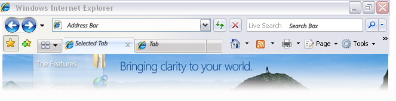

Рациональный, удобный и простой

| Избранное | Домашняя страница | |||
| Добавить в избранное | RSS-каналы | |||
| Новая вкладка | Печать | |||
Новый интерфейс
Новый интерфейс обозревателя Internet Explorer 7: больше информации на каждой посещаемой веб-странице. Рационально организованная панель инструментов облегчает добавление веб-узлов в избранное, поиск в Интернете, очистку журнала и доступ к другим наиболее часто используемым задачам и средствам.
Новый интерфейс обозревателя Internet Explorer 7: больше информации на каждой посещаемой веб-странице. Рационально организованная панель инструментов облегчает добавление веб-узлов в избранное, поиск в Интернете, очистку журнала и доступ к другим наиболее часто используемым задачам и средствам.